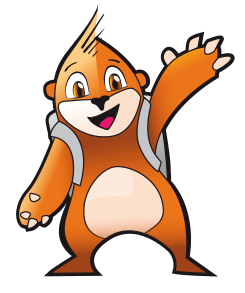
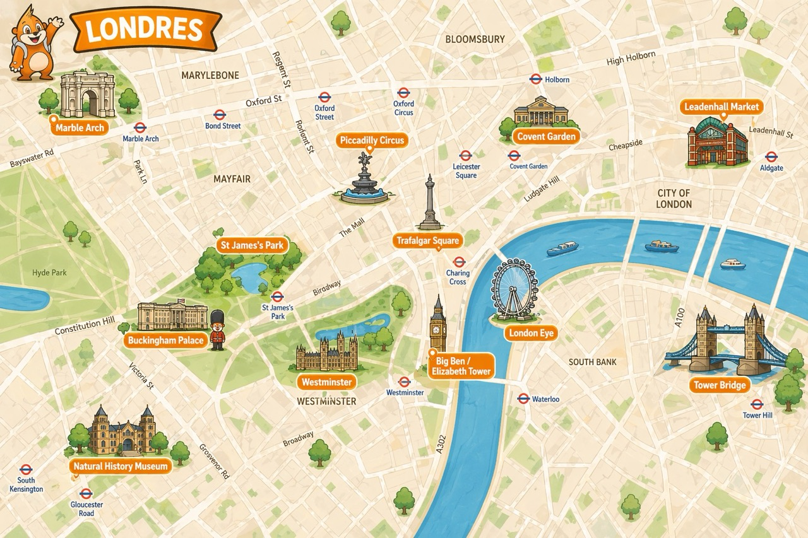

Antes de continuar, necesito saber con quién estoy hablando. ¿Quiénes sois?
Queridos Paula y Hugo:
¡Por fin! Llevo meses intentando ponerme en contacto con vosotros… meses de verdad. Os he dejado un montón de cartas en lugares seguros, escondites de nivel topoexperto, incluso en sitios que solo vosotros conoceríais… y no habéis acudido a ninguna misión. Eso no es propio de vosotros.
He estado pensando mucho en esto, y hay algo que no encaja. Vosotros nunca rechazáis una misión. Nunca. Y mis otros informadores tampoco han oído que hayáis recibido nada ni que hayáis hablado de ello. Así que empiezo a sospechar que alguien está interceptando mis mensajes antes de que lleguen a vuestras manos. No quiero alarmaros, pero ya sabéis quién podría estar detrás de algo así.
Por eso he tenido que cambiar completamente de sistema. Después de varios intentos fallidos, por fin he conseguido una forma de comunicarme con vosotros a través del móvil. Es más segura, más rápida y, por ahora, parece que funciona. Y menos mal que lo hace, porque justo cuando lo he conseguido he recibido una información que lo cambia todo.
He oído que vais a viajar a Londres.
No sabéis lo importante que es eso.
Yo estuve allí hace unos días, siguiendo una pista muy antigua. Al principio parecía una misión sencilla, pero pronto entendí que no lo era en absoluto. Descubrí que alguien había preparado un desafío escondido por toda la ciudad. No eran objetos, ni mapas, ni códigos habituales. Era algo más elegante, más difícil de detectar.
Una frase.
Una frase formada por doce letras, escondidas en doce lugares distintos de Londres. Cada lugar guardaba una de esas letras, pero no estaban a la vista. Para encontrarlas, había que observar bien, fijarse en los detalles y resolver pequeñas pruebas que el propio lugar planteaba.
Intenté seguir el rastro. Pasé por una plaza llena de leones, crucé un puente sobre el río, encontré un gran arco de piedra, me moví entre luces que no se apagan nunca y entré en un edificio donde el pasado parece seguir vivo. Estuve muy cerca de comprenderlo todo, pero no me dio tiempo a terminar. La situación empezó a complicarse y tuve que retirarme antes de completar la frase.
Antes de marcharme, dejé preparado algo para vosotros. No podía arriesgarme a que desapareciera también, así que lo protegí dentro de este sistema. He guardado una pista para cada uno de los lugares y una pequeña prueba que tendréis que resolver cuando estéis allí. Si lo hacéis bien, conseguiréis una letra en cada sitio.
Esa es vuestra misión.
Tendréis que descubrir de qué lugar se trata en cada caso, ir hasta allí, observar con atención y superar las pruebas. Cada acierto os dará una letra. Cuando tengáis las doce, tendréis que pensar, ordenarlas y descubrir cuál es la frase completa. No es una frase cualquiera, os lo aseguro. Cuando la entendáis, todo encajará.
Pero hay algo más que debéis tener en cuenta.
El tiempo importa.
Tenéis hasta las diez de la mañana del 26 de abril. La cuenta atrás ya ha comenzado. No hace falta correr sin pensar, pero sí avanzar, fijaros bien y no dejar pasar las pistas.
Hay un último consejo que no puedo dejar de daros. En esta misión, lo más importante no es la rapidez, ni la fuerza, ni siquiera la suerte. Lo más importante es mirar bien. Mirar de verdad. Donde otros pasan deprisa, vosotros tendréis que deteneros. Donde parece que no hay nada, ahí es donde suele estar la clave.
Yo estaré con vosotros en cada paso, a través de este dispositivo. Puede que a veces la señal falle un poco, pero no os preocupéis, eso entra dentro de lo normal en este tipo de operaciones.
Confío en vosotros. Mucho.
Es bueno volver a trabajar juntos.
Buena suerte, amigos.
Topotino

¿Podeis identificar el objetivo?